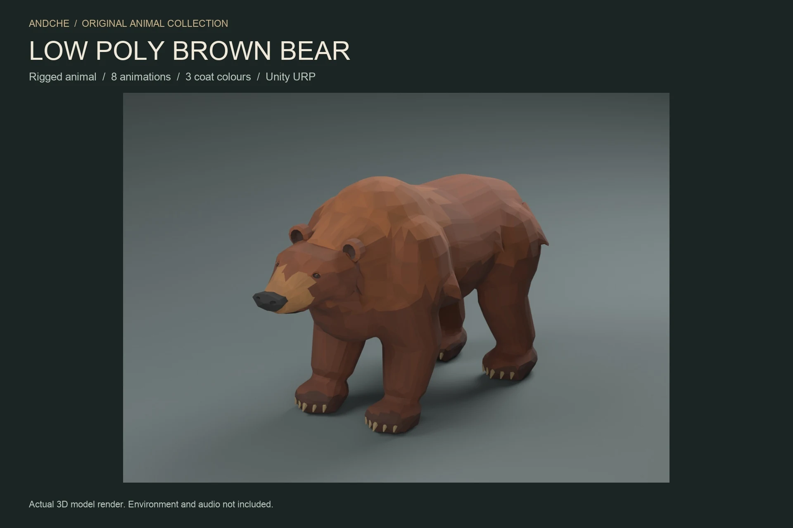
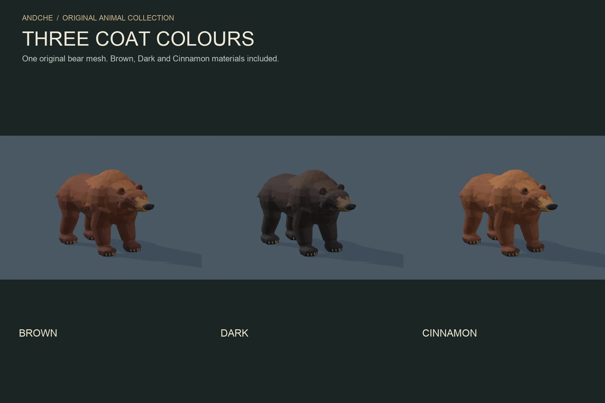
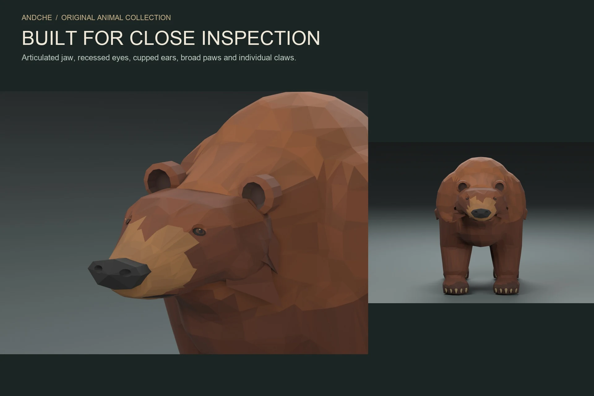
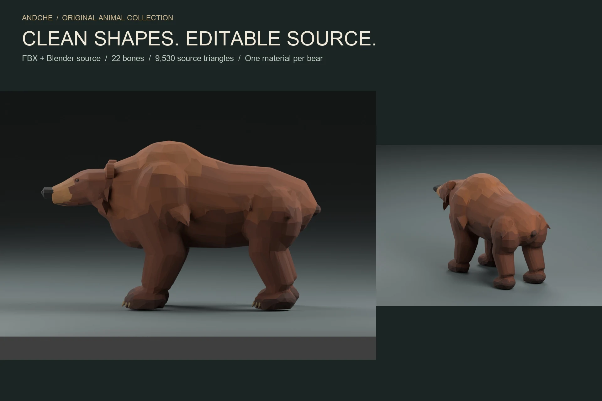
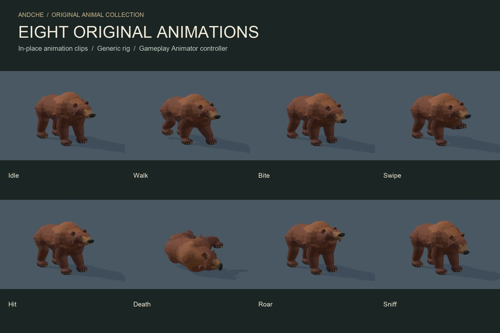

Animated wildlife / Stylized animal / Unity URP
Low Poly Brown Bear
Bring a powerful forest animal to your world. Broad shoulders, solid paws, rounded ears and a warm faceted coat give this bear a distinctive woodland presence.
Awaiting Unity approval · $9.99 USD
Submitted to Unity Asset Store on 4 November 2026. Not available to purchase yet; no release date is confirmed.

Watch all eight animations.
Actual Unity captures at original playback speed. Idle, Walk, Bite, Swipe, Hit, Death, Roar and Sniff. Silent preview; no audio or running animation is included.
From quiet woodland to close encounters.
Add an animated brown bear to a fantasy RPG, survival game or wilderness scene. Choose the Brown, Dark or Cinnamon prefab and connect the supplied Animator controller to your own gameplay.
The interactive URP studio lets you inspect every coat and clip. Editable Blender source, FBX, original authoring scripts and English integration guides are included for customization.
Inside the package
- One original bear mesh with editable FBX
- 22-bone Generic rig and 8 in-place animation clips
- 3 coat materials and matching creature prefabs
- Locomotion/action Animator controller
- Interactive Unity URP demo scene
- Optional local ground-clearance helper
- Blender source and English documentation

A closer look.






Technical details
9,522 triangles, 22,565 imported render vertices and 22 bones. The authoring mesh has 4,849 vertices / 9,530 triangles; Unity removes degenerate triangulation. Flat normals and palette UV boundaries split imported vertices.
One skinned renderer and one material per bear. Three 512 × 32 base-colour palette textures; no normal, metallic or AO maps. One mesh resolution, no LODs. Metre scale, ground-level origin and +Z forward.
Tested with Unity 6000.3.23f1 and URP 17.3.0. Supplied materials and demo support URP only.
Know before you build
This is a visual asset. Movement, AI, navigation, combat logic, audio, ragdoll and a forest environment are not included. All clips are in-place, without root motion. No running animation is supplied. The Generic rig is not Humanoid.
At playback rate 1, match Walk with movement of approximately 0.65 m/s. The optional clearance helper addresses local floor penetration during blends, not uneven-terrain IK.
On-screen demo controls work without gameplay input. Optional keyboard shortcuts use the classic Input Manager. Built-in and HDRP materials are not included.
Build a world around the bear.
Explore Forest & Cliffs for woodland environments, meet the Low Poly Wolf, or add smaller creatures with Low Poly Rats.
Explore all assets Ask about compatibility ↗Updated 4 November 2026. Planned price before taxes. Unity Asset Store controls final availability and local pricing.